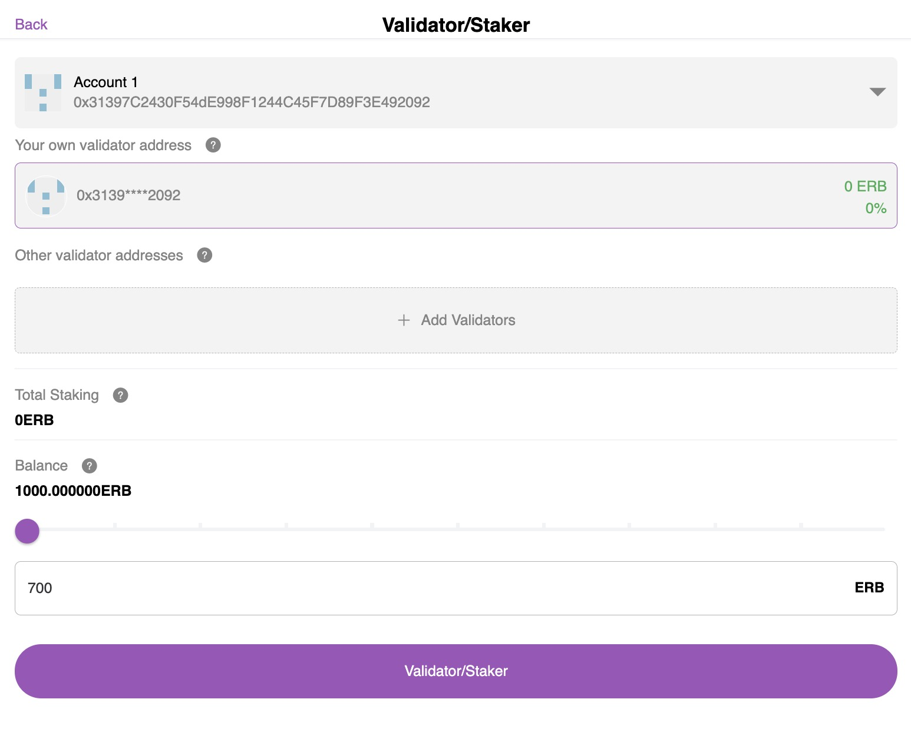
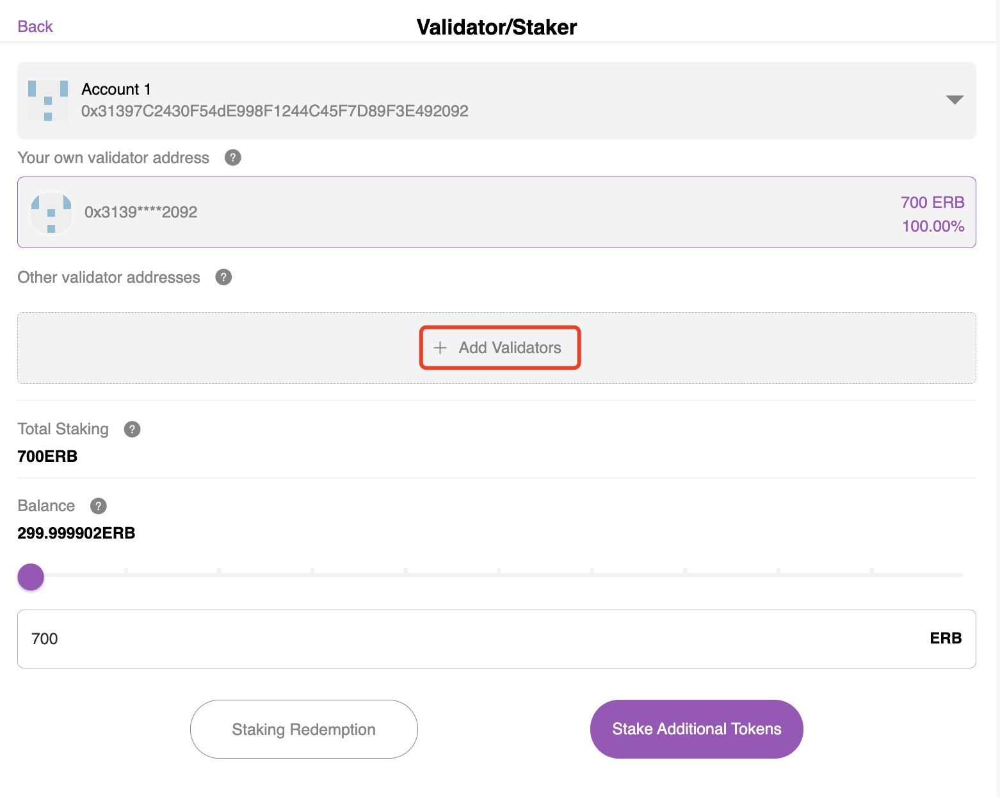
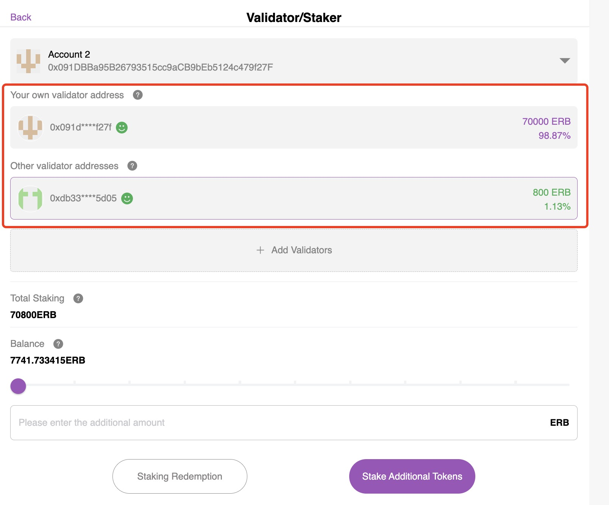

Validator/Staker#
Note
Please ensure that your account balance is more than 700 ERB. Then you can execute the stake.
Staker: The amount of self-stake is not less than 700 ERB.
Validator: The amount of self-stake is not less than 700 ERB, and the total amount staked(Amount of self-stake + Other amount staked) is not less than 70,000 ERB.
Entry#
Click Validator/Staker, enter the staking page.

Staking#
Step1: Stake your own address#
Enter the amount of stake.
Click Validator/Staker, then click confirm.
The success will be displayed after the confirmation on the chain. Press the Done button. After the stake is successful, you can redeem it.
(Optional)Step2: Stake other address#
Note
Before staking to other addresses, you must complete Step 1, which is to stake 700 ERB for yourself.
Click Add Validators, and select from the list or paste into the input box the address you want to stake.
Enter the amount of stake, click Validator/Staker, then click confirm.
Redeeming staking#
Note
You need to wait 365 days to redeem your stake.
Click on the account you want to redeem the staking.
Enter the number of stakes you want to redeem.
Click Staking Redemption, then click Confirm。